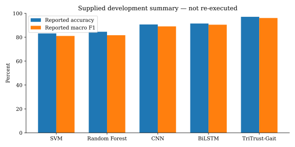
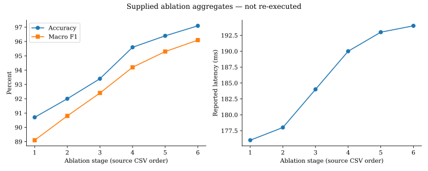
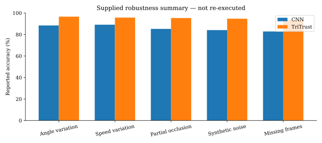
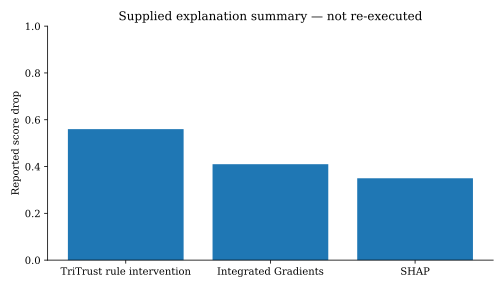

Software implementation and synthetic validation. Original paper results have not been reproduced.

Source: earlier supplied aggregate CSV; no new experimental support implied.

Source: earlier supplied aggregate CSV; no new experimental support implied.

Source: earlier supplied aggregate CSV; no new experimental support implied.

Source: earlier supplied aggregate CSV; no new experimental support implied.
| Model | Runs | Mean Rank-1 | SD |
|---|---|---|---|
| bilstm | 5 | 100.00 | 0.00 |
| cnn | 5 | 75.00 | 25.00 |
| random_forest | 5 | 50.00 | 0.00 |
| svm | 5 | 100.00 | 0.00 |
| tritrust | 5 | 5.00 | 11.18 |
Small synthetic sample. These are software checks, not dataset benchmark scores.